Screenshots of the Short Time-series Expression Miner
(STEM)

The input interface above is the first screen that appears when STEM is executed. In the first section of this interface a user specifies the input data and normalization options. Repeat data can be specified through a dialog window that appears by clicking on the “Repeat Data” button. In the second section of the interface a user specifies the gene annotation source which can be any gene annotation source available from http://www.geneontology.org/GO.current.annotations.shtml or it can be provided by the user. In the third section of the interface a user can choose to either use the STEM clustering method, a novel clustering method specifically for short time series gene expression data (Ernst et al, Bioinformatics 2005), or the standard K-means clustering algorithm. Screenshots on this page show images for the STEM clustering method. When the STEM Clustering method is selected two parameters, the number of model profiles and the maximum unit change in model profiles between two time points, are available on this screen as shown above. A user can click “Advanced Options” to change more advance parameters. Clicking “Execute” executes the clustering algorithm and brings up the main window of the software to display the results. By clicking on any question mark a user can receive help information about the corresponding input field.

Repeat data of an experiment can be loaded from a dialog window as above.
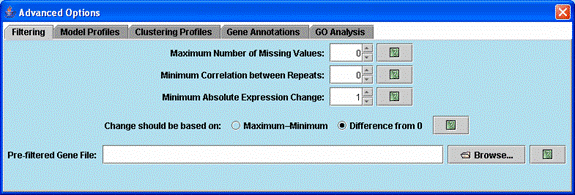
Advanced options related to filtering genes.
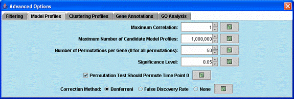
Advanced options related to selecting model profiles and assessing their significance.
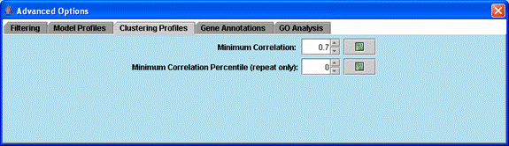
Advanced options related to clustering significant model profiles.

Advanced options related to gene annotations.
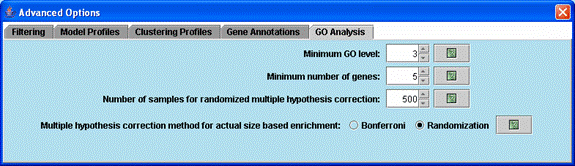
Advanced options related to the Gene Ontology enrichment analysis.
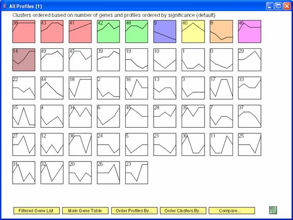
Above is main window to the software displaying results for the STEM clustering method. Each gene is assigned to the model profile its temporal expression profile most closely matches. The profiles that have a statistically significant number of genes assigned based on a permutation test are shaded. Statistically significant profiles that are similar form a cluster of profiles, and have the same color. The number in the top left hand corner of each profile box is the profile ID. One can reorder the profiles on this screen by selecting “Order Profiles By” or reorder the clusters of profiles by selecting “Order Clusters By.” One can see a table of all genes passing filter and the profiles to which they were assigned by clicking on the “Main Gene Table” button. The “Filtered Gene List” button displays a table with those genes that did not pass filter. The “Compare” option for comparing two data sets under different experimental conditions is described at http://www.cs.cmu.edu/~jernst/stem/comparison.html.

After clicking the “Order Profiles By” button the above dialog appears. The profiles can be reordered by enrichment of genes from any GO category or a user defined set, by ID, by the p-value significance of the number of genes assigned being greater than the expected number based on a permutation test, or the number of genes assigned or expected.

The profiles are reordered based on enrichment of cell cycle genes. The profiles most enriched for the cell cycle appear to the left of the top row. The number of cell cycle genes and the p-value enrichment of genes assigned to the profile appear in the lower left corner of the profile box. The p-value of enrichment for profiles can be based on either the actual number of genes assigned to the profile or the expected number.

The clusters of profiles can also be reordered based on their importance to a particular GO Category, in the image above it is the cell cycle.

Pressing the help icon on the main window with all the profiles displays a legend explaining what each number means on a profile box.
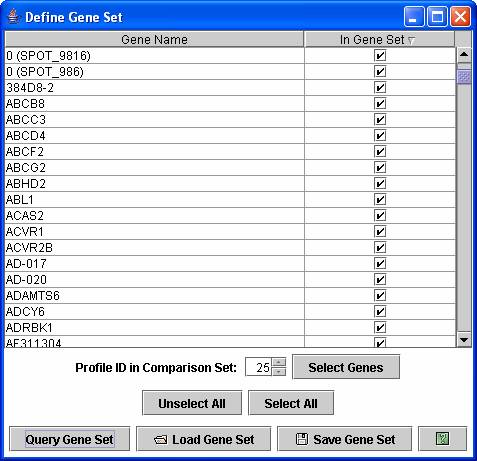
A user can also reorder profiles or clusters of profiles based on a user defined set of genes through the above dialog box.

The main screen with all the model profiles is zoomable and pannable. One can zoom in or out on any portion of the screen. The ability to zoom and pan is powered by the open source software, Piccolo, available from http://www.cs.umd.edu/hcil/piccolo/.
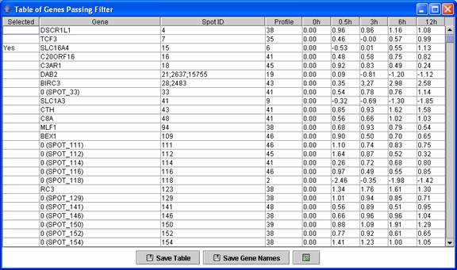
A user can see a table of all genes passing filter and the profile to which they were assigned.
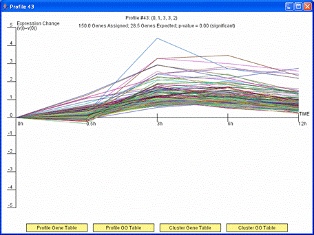
By clicking on a profile box on the main screen detailed information about the profile is displayed. The above image shows an example of such a window. The detailed information about the profile includes a graph of the expression pattern of genes assigned to the profile, how many genes were assigned, how many genes were expected, and the associated p-value significance of the number genes assigned being greater than what was expected. A user also has the option from this window to display a table with all the genes assigned to the profile by pressing the “Profile Gene Table” or a table with a Gene Ontology (GO) enrichment analysis results for the set of genes assigned to the profile by pressing “Profile GO Table.” If a profile has a statistically significant number of genes assigned and was grouped in a cluster with another profile then as above the “Cluster Gene Table” and “Cluster GO Table” buttons also appear. These buttons are analogous to the “Profile Gene Table” and “Profile GO Table” buttons, but the gene table and GO enrichment analysis include all genes assigned to any profile in the cluster of profiles to which the displayed profile belongs. Profiles of the same color in the main window belong to the same cluster of profiles.


If the profiles on the main screen are ordered based on enrichment for a GO Category or gene set, the dialog window with detailed information about the profile will also include an option to plot just the genes belonging to the GO Category or gene set by which the profiles are ordered. The image on left shows the window that appears when a user clicks on the monotonically decreasing profile when the profiles are reordered based on the cell cycle. Pressing the button “Click to plot only profile cell cycle genes” on the window on left replots the window with only those genes assigned to the profile that are also annotated as being cell cycle genes as shown on right. There is also the option through the button, “Profile cell cycle Gene Table,” to display a table containing just the cell cycle genes assigned to the profile.
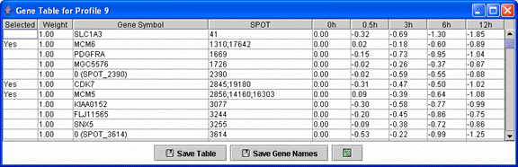
Above is an example of a profile gene table. This table contains all genes assigned to the monotonically decreasing profile.
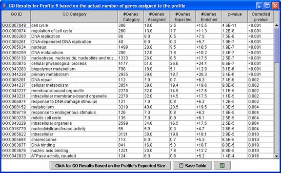
Above is an example of a Gene Ontology (GO) enrichment analysis table for a profile, in this case the monotonically decreasing profile. The expression profile is likely relevant to categories for which the p-value is low. By default the enrichment analysis is based on a profile’s actual size, that is the number of genes assigned to the profile. A table can also be displayed with the enrichment analysis based on a profile’s expected size by pressing the “Click for GO Results Based on the Profile’s Expected Size.” Clicking on a row of the table opens a new table showing all genes assigned to the profile that also are annotated as belonging to the GO category.
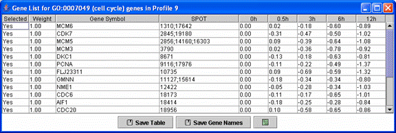
Above is a table displaying just the cell cycle genes assigned to the monotonically decreasing profile.